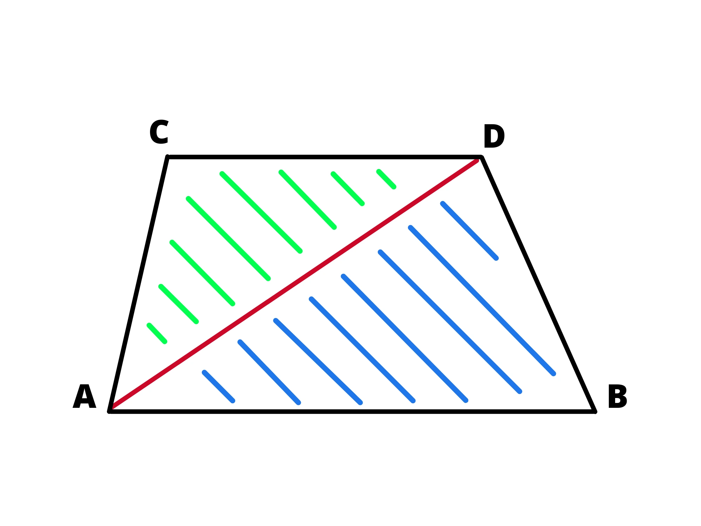

Un trapezio è un quadrilatero con due lati paralleli, i lati paralleli si chiamano basi del trapezio mentre gli altri \(2\) si chiamano lati obliqui. I segmenti che uniscono i vertici opposti si chiamano diagonali.
I trapezi possono essere di \(3\) tipi, rettangoli, isosceli o scaleni.
Il trapezio isoscele ha i lati obliqui congruenti.
Il trapezio rettangolo ha un’angolo retto.
Il trapezio scaleno non ha ne lati obliqui congruenti ne un angolo retto.
Per calcolare l’area di un trapezio è necessario moltiplicare la somma delle basi per l’altezza e dividere il risultato per \(2\).
\[{(B+b) \cdot h} \over 2\]
Questo perché se vediamo il trapezio come \(2\) triangoli aventi per base la base maggiore e la base minore del trapezio e per altezza l’altezza del trapezio possiamo calcolare l’area del trapezio sommando le aree dei triangoli:
\[{B \cdot h \over 2 } + {b \cdot h \over 2 } = { (B+b) \cdot h \over 2 } \]
Teorema: In un trapezio, gli angoli adiacenti a un lato obliquo sono supplementari (la loro somma è \(180^{\circ}\)). Nel trapezio isoscele anche gli angoli opposti sono supplementari.
Teorema: Le diagonali di un trapezio si tagliano in parti proporzionali.